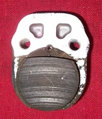

A high-pitched squeal or squeak when you brake is a vibration between pad and disc (or shoe and drum). It is often harmless: dust, new pads, or a missing anti-squeal shim (a thin plate behind the pad). But it can also warn that the pads are worn to their limit, are contaminated, or that something in the caliper is loose. The checks below separate the two.
Is it safe to ride?
Ride with care if braking is still strong and the pads are above the limit. If the squeal changes to grinding or scraping, or braking gets weaker, stop riding and go to Brakes grind or scrape.
Quick checks first
- Look at pad thickness through the caliper.
- Is the noise only in the first few stops in the morning or after rain? Light rust on the disc makes noise until it wears off.
- Were the pads just changed? New pads may squeal until bedded in.
- Is the caliper loose? Push it with your hand.
Diagnose it step by step
1Are the pads near or below their limit?
- Yes: some pads have a metal tab that squeals on purpose when they are worn. Replace disc brake pads.
- No: go to step 2.
2Is braking weaker than normal, or are the pads or disc oily or shiny?
- Yes: go to Brakes are firm but do not stop the bike well.
- No: go to step 3.
3Is anything loose: caliper bolts, pad pin, disc bolts?
- Yes: tighten to the model torque in your manual. A loose disc or caliper is dangerous; check all of them.
- No: go to step 4.
4When you look at the pads, is the anti-squeal shim or spring plate missing, or is there thick dust?
- Yes: clean the caliper and refit the shims and spring plate with Clean a brake caliper and free the pistons.
- No: go to step 5.
5Is one pad worn more than the other, or tapered?
- Yes: a piston or slide is sticking. Go to Brake pads wear unevenly.
- No: go to step 6.
6Is the disc grooved or glazed?
- Yes: Check a brake disc.
- No: try a different pad compound listed for your bike. Some pads are noisier than others.
Drum brake squeal: go to Drum brake squeaks or grinds.
Never spray oil or lubricant on a squeaking disc or drum. It stops the noise by stopping the brake.
Causes, most likely first
| Cause | How to confirm | Fix |
|---|---|---|
| Dust or light rust | Noise only on first stops; clears | Clean caliper; no action if it clears |
| New pads not bedded | Pads just fitted | Bed in with gentle stops |
| Pads worn to indicator | Thin pads, wear tab touching disc | Replace disc brake pads |
| Missing shim or spring plate | Parts missing on inspection | Refit with Clean a brake caliper and free the pistons |
| Loose caliper, pad pin or disc | Movement by hand | Tighten to model torque |
| Glazed pads or disc, sticking piston | Shiny surfaces; uneven wear | Check a brake disc, Clean a brake caliper and free the pistons |